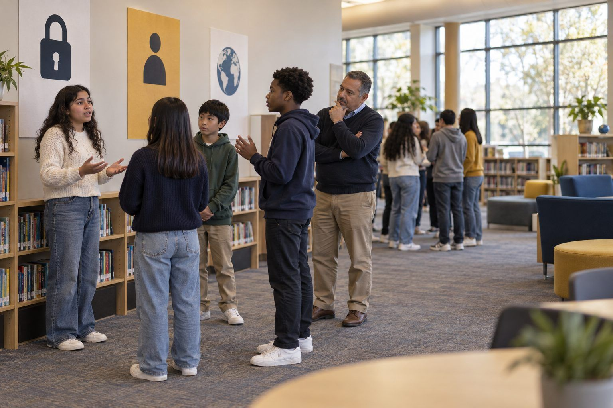

Aprendizaje estudiantil · Grados 6–8, Grados 9–12 · 50 minutos
Mi plan de seguridad digital
Los estudiantes analizan dilemas reales sobre qué compartir, revisan sus hábitos de seguridad y privacidad en sus cuentas y escriben un plan de seguridad personal que le explican a un familiar.
Mantenerse seguro en línea no es una sola regla; es un conjunto de hábitos: frases de contraseña seguras y únicas, inicio de sesión en dos pasos, una configuración de privacidad cuidadosa, pensar antes de publicar y saber qué no escribir en un chatbot de IA. Los estudiantes conversan sobre ocho escenarios de "¿Qué harías?", revisan sus propios hábitos con una lista de verificación (nadie tiene que revelar ningún dato de sus cuentas) y escriben un Plan de seguridad digital personal. Los estudiantes que todavía no tienen cuentas hacen su plan para un dispositivo familiar, una cuenta escolar o su primera cuenta.
En este paquete
- Hoja A: Tarjetas de escenarios "¿Qué harías?" (tarjetas para recortar)
- Hoja B: Revisión de hábitos de seguridad (lista de verificación)
- Hoja C: Mi plan de seguridad digital (hoja de trabajo)
- Clave del facilitador (última página)
Indicadores ELE de TCEA
- S2.1 Sé cómo proteger mi información personal en internet.
- S2.3 Soy consciente de los posibles riesgos de compartir contenido en internet.
- S1.2 Puedo adaptarme a nuevas herramientas y plataformas digitales.
- S4.1 Sé cómo asumir la responsabilidad de mi propio aprendizaje.
- T2.2 Sé cómo guiar a los estudiantes en el uso seguro y responsable de internet.
Guía completa para el facilitador: mglearn.github.io/eles/es/activities/my-digital-safety-plan.html
Hoja A de Mi plan de seguridad digital
Tarjetas de escenarios "¿Qué harías?"
Recórtenlas. Las parejas conversan sobre cada tarjeta y se ponen de acuerdo en una acción antes de leer el reverso. Imprima los reversos por separado como clave.
Tarjeta 1 · La foto del equipo
¡Tu equipo de fútbol ganó el torneo! Quieres publicar una foto de todos con el uniforme frente al letrero de tu escuela, con el texto "¡De regreso a casa después del entrenamiento todos los días a las 4!".
Tarjeta 2 · El cuestionario
Circula un cuestionario divertido: "¡Tu nombre de superhéroe = el nombre de tu primera mascota + la calle donde creciste!". Todos están publicando sus respuestas en los comentarios.
Tarjeta 3 · Contraseña compartida
Tu mejor amigo te pide la contraseña de tu juego para subir de nivel a tu personaje mientras estás de vacaciones. "¡Nunca haría nada malo, te lo prometo!"
Tarjeta 4 · La misma contraseña en todas partes
Usas la misma contraseña para tu juego, tu correo electrónico y tu cuenta escolar porque es fácil de recordar.
Tarjeta 5 · Ubicación activada
Te das cuenta de que tu aplicación de fotos ha estado registrando tu ubicación en cada foto, incluidas las que tomaste en tu cuarto.
Tarjeta 6 · El código de inicio de sesión
Recibes un mensaje de texto con un código de inicio de sesión de seis dígitos que no pediste. Un minuto después, alguien te escribe: "Uy, mandé mi código a tu número por error. ¿Me lo puedes reenviar?".
Tarjeta 7 · El chatbot de IA
En tu clase se permite usar un chatbot de IA para generar ideas. Quieres más ayuda con un ensayo personal, así que piensas pegar tu nombre completo, tu dirección y una historia sobre un conflicto familiar.
Tarjeta 8 · La captura de pantalla
Alguien en un chat grupal comparte una captura de pantalla de un mensaje privado que le mandó un compañero de clase, y la gente empieza a burlarse.
Hoja B de Mi plan de seguridad digital
Revisión de hábitos de seguridad
Esto es privado y es para ti. No escribas ningún nombre de usuario ni contraseña. ¿Todavía no tienes cuentas? Responde pensando en un dispositivo familiar o en tu cuenta escolar.
| Sí | En parte | No | No estoy seguro | |
|---|---|---|---|---|
| Uso una contraseña o frase de contraseña distinta para cada cuenta. | ||||
| Mis contraseñas son largas (varias palabras), no un nombre, una fecha de cumpleaños ni una mascota. | ||||
| El inicio de sesión en dos pasos está activado dondequiera que se ofrezca. | ||||
| He revisado quién puede ver mi perfil y mis publicaciones. | ||||
| Compartir la ubicación está desactivado en las aplicaciones que no lo necesitan. | ||||
| He revisado qué aplicaciones pueden usar mi cámara, mi micrófono y mis contactos. | ||||
| Cierro sesión en las computadoras compartidas o de la escuela cuando termino. | ||||
| No comparto códigos de inicio de sesión, ni siquiera con mis amigos. | ||||
| Pregunto antes de publicar fotos de otras personas. | ||||
| No incluyo datos personales en nada de lo que escribo en una herramienta de IA. | ||||
| Sé a qué adulto le diría si hackearan una cuenta o si algo en línea me hiciera sentir mal. | ||||
| Antes de enviar algo, pienso: "¿Estaría bien para mí si esto se compartiera?". |
Notas
Hoja C de Mi plan de seguridad digital
Mi plan de seguridad digital
Escribe un plan que de verdad vayas a seguir. Nunca escribas aquí una contraseña real.
Mi estrategia de frases de contraseña (cómo crearé y guardaré contraseñas seguras y distintas, sin escribir ninguna):
Dónde activaré primero el inicio de sesión en dos pasos, y por qué:
Tres configuraciones que revisaré en cualquier aplicación o plataforma nueva:
Mi regla para compartir publicaciones, fotos y mensajes (incluidas fotos de otras personas):
Mi regla sobre lo que sí y lo que no escribiré en una herramienta de IA:
Si algo sale mal (una cuenta hackeada, un mensaje que me asusta, una publicación de la que me arrepiento), yo…
La sugerencia de "Yo agregaría…" de mi compañero y la línea que revisé:
Paso en casa: Le expliqué mi plan a ___. Juntos revisamos ___ y cambiamos ___.
Solo para el facilitador: Mi plan de seguridad digital
Clave de respuestas y notas
Hoja A: Tarjetas de escenarios "¿Qué harías?"
- Tarjeta 1 · La foto del equipo
- Celebra, pero piensa en lo que revela la foto: el nombre de la escuela, tu horario y las caras de tus compañeros. Pregúntales a tus compañeros antes de publicarlos, recorta el letrero y quita el horario. Orgullo público, detalles privados.
- Tarjeta 2 · El cuestionario
- Esas son respuestas comunes a las preguntas de seguridad. Publicarlas puede ayudar a alguien a entrar en tus cuentas. Disfruta la broma sin publicar tus respuestas reales.
- Tarjeta 3 · Contraseña compartida
- Las amistades cambian, y una contraseña compartida se puede pasar a otros o usar por accidente. Mantén tus contraseñas en privado (la excepción es tu mamá, tu papá o tu tutor). Si ya la compartiste, cámbiala.
- Tarjeta 4 · La misma contraseña en todas partes
- Si hackean un sitio, los atacantes prueban esa contraseña en todas partes. Usa una frase de contraseña distinta para cada cuenta, guardada en un administrador de contraseñas o en una lista que se guarda en un lugar seguro en casa con un adulto.
- Tarjeta 5 · Ubicación activada
- Los datos de ubicación pueden revelar dónde vives y dónde pasas el tiempo. Desactiva la ubicación de la cámara o quítala antes de compartir, y revisa qué aplicaciones pueden ver tu ubicación.
- Tarjeta 6 · El código de inicio de sesión
- Alguien está tratando de entrar en tu cuenta. Nunca reenvíes un código. Cambia tu contraseña, asegúrate de que el inicio de sesión en dos pasos esté activado y díselo a un adulto.
- Tarjeta 7 · El chatbot de IA
- Trata todo lo que escribes en una herramienta de IA como algo que podría guardarse o ser visto por otros. No incluyas nombres, direcciones ni detalles privados de tu familia. En su lugar, describe la situación en términos generales. ¿Tienes menos de 13 años? Tu maestro usa la herramienta por ti.
- Tarjeta 8 · La captura de pantalla
- Cualquier cosa que envíes puede terminar en una captura de pantalla y compartirse. No le sigas el juego; apoya a tu compañero y repórtalo a un adulto de confianza. Antes de enviar algo, pregúntate: ¿estaría bien para mí si esto se compartiera?